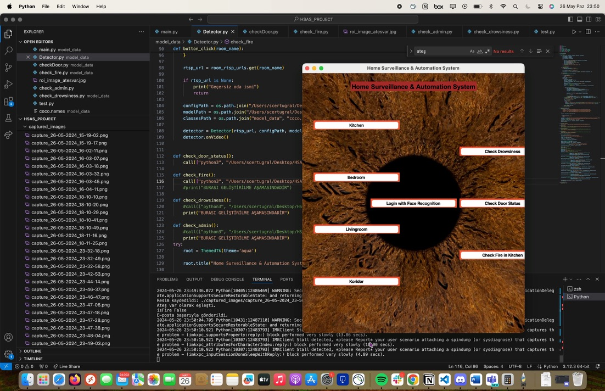

Ev Güvenlik Otomasyon Sistemi

Bu projenin amacı, bir ev ortamındaki dört güvenlik kamerasının işlevselliğini artırmak ve yüz tanıma, hareket algılama, güvenlik alarmları ve e-posta bildirimlerini içeren gelişmiş güvenlik özellikleri entegre etmekti. Sistem, çeşitli teknolojiler kullanıldı: yüz tanıma Keras kütüphanesi ve haar cascades kullanılarak uygulandı, nesne tespiti SSD MobileNet V3 ve OpenCV ile gerçekleştirildi ve temel hareket algılama algoritmaları geliştirildi. Ayrıca, kolay etkileşim ve kontrol için Tkinter kullanılarak bir kullanıcı arayüzü oluşturuldu. Projenin temel özellikleri arasında gelişmiş güvenlik için gerçek zamanlı yüz tanıma ve hareket algılama, yetkisiz erişim veya şüpheli aktiviteleri kullanıcılara bildirmek için otomatik bir uyarı sistemi ve gözetim sisteminin kolay izlenmesi ve yönetimi için kullanıcı dostu bir arayüz yer aldı.
